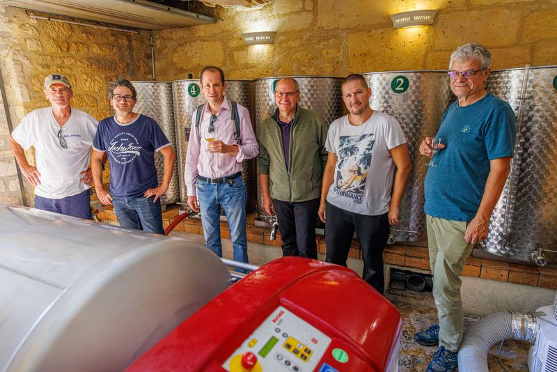
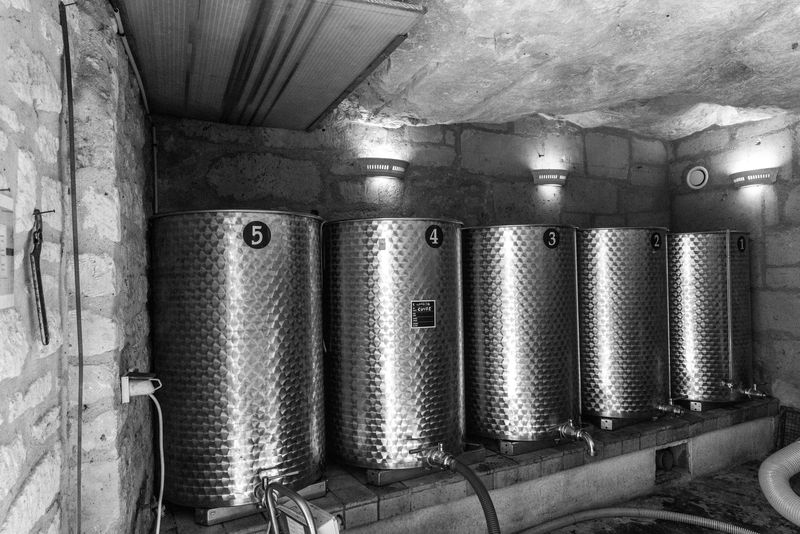

L’association des Vignerons de Gouvieux
La vigne communale est exploitée par l’Association des vignerons de Gouvieux depuis 2002. Ce sont aujourd’hui 28 vignerons amateurs passionnés qui gèrent et réalisent l’ensemble des opérations de viticulture et de vinification jusqu’à la mise en bouteille.

Activités des vignerons
Travaux à la vigne
Les travaux de la vigne s’étalent de mars (taille) à septembre (vendange). Entre-temps, ébourgeonnage, palissage, rognage, effeuillage et vendange en vert sont les différentes étapes du travail du vigneron.
Vendange
Les vendanges sont effectuées à la main en deux fois : généralement en septembre, lorsque le degré d’alcool potentiel atteint environ 10,5 ° pour le vin mousseux, puis environ 15 jours après pour le vin tranquille. L’association dispose d’un pressoir à membrane Bucher d’une capacité de 200 kg permettant des cycles lents d’une durée de 2 h 30 pour des pressages doux.

Vinification
La cave se situe dans une maison troglodytique du quartier des carrières. Les conditions de température nécessaires aux opérations de vinification et de stockage sont respectées (12 °C à 14 °C).
Au-delà de la surveillance des fermentations et du travail du vin, les paramètres œnologiques sont suivis tout au long de l’élaboration, notamment pour le vin mousseux. Les mises en bouteilles, tirage et dégorgement, après 2 ans sur lattes, sont effectués à la cave.
Les produits utilisés et les techniques sont exclusivement adaptés à la production de vins biologiques.
